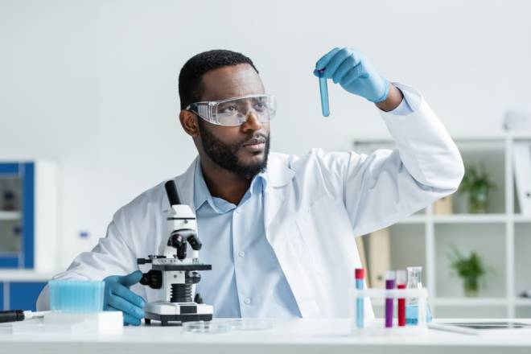

To operate in a transparent and ethical manner, actively contributing to the sustainable development of the communities where we operate. Aiming to raise awareness of the importance of recycling waste engine oils and their positive impacts when removed from the environment.

Implement strict quality control standards at all stages of the process of transforming waste oil into grease. Ensuring operational efficiency and safety in all activities, minimising environmental impact and maximising the use of sustainable resources. of sustainable resources.

Continuously investing in research and development to improve our transformation processes and maximise the creation of innovative eco-solutions. Stimulating creativity and internal to drive national technological and sustainable progress.
Managing our financial resources responsibly, with a focus on the company's the company's long-term economic viability. Striving to achieve sustainable and profitable growth, in such a way as to reconcile profitability with the adoption of ethical business practices, environmentally friendly business practices.